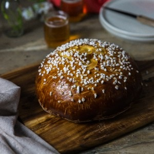

La mouna

Pas moins de deux recettes en deux jours c’est du jamais vu!!!! Aujourd’hui je vous propose la recette traditionnelle que ma grand-mère faisait à l’occasion de Pâques il s’agit de la recette de la mouna et j’espère qu’elle vous séduira.
Depuis que j’ai ouvert mon blog, la recette de la mouna est une des recettes qui me tardait particulièrement de poster car c’est une brioche qui a le goût de mon enfance, préparée par ma grand-mère et que j’ai eu la chance de déguster chaque année à l’occasion de Pâques.
La mouna est une brioche à la mie assez dense contrairement à celle que l’on connaît ici en France et elle est parfumée très légèrement de fleur d’oranger, aux zestes d’agrumes et de graines d’anis.
Cette brioche que l’on appelle « mouna » nous vient tout droit d’Espagne et plus précisément de la province de Valence et d’Alicante. Lors de l’immigration en Algérie, les espagnols décidèrent de perpétuer leur coutume de Pâques dans tous les coins d’Oranie et le lundi de Pâques fut appelé « le jour de la Mona ». La mona est devenue mouna afin de devenir un peu plus « française » et perdit donc son accent espagnol.
Le week-end dernier, ma grand-mère me racontait qu’à l’époque sa mère faisait lever la pâte la nuit sous la couette (car ils n’avaient pas de chauffage) afin que la « chaleur humaine » permette à la pâte de gonfler correctement. Aujourd’hui, heureusement nous avons des chauffages ou encore des fours qui permettent à la pâte de plutôt bien lever et d’avoir une belle mouna à l’arrivée!
Ce que j’adore dans la mouna c’est le parfum qui se dégage de la mie qui est vraiment différent de nos brioches et la fine croûte du dessus qui est absolument caractéristique et que j’adore!
Si vous me suivez un petit peu vous savez qu’en ce moment je participe à une expérience cidronomique afin d’associer diverses saveurs à toute une gamme de cidre de la gamme Val de Rance. Le cidre que j’ai associé à ma mouna est celui que je préfère dans toute la gamme. Il s’agit du cidre « envie de gourmandises & chocolat » à la poire et mon dieu c’est une petite merveille. Avec une part de mouna à l’heure du goûter je peux vous dire que c’était pile poil ce qu’il fallait!
Je vous laisse maintenant découvrir cette recette qui me tenait particulièrement à cœur alors voilà j’espère vraiment qu’elle vous plaira et que vous saurez l’apprécier! A très vite et très bon week-end de Pâques à tous <3
Ingrédients
- Farine T45 - 500g
- Levure de boulanger FRAICHE - 35g
- Oeufs - 150g (environ 3oeufs de tailles moyennes)
- Beurre doux - 100g
- Zeste de citron - 1/2 citron
- Zeste d'orange - 1 orange
- Jus d'orange - le jus d'une orange
- Fleur d'oranger - 2 càs
- Graines d'anis - 1càs 1/2
- Sucre semoule - 150g + 2càs pour le levain
- Sel - 1 pincée
- Lait - 180ml
- Sucre perlé
- Jaunes d'oeufs - 2
Instructions
- Dans une casserole, faire chauffer le lait (arrêter avant l'ébullition)
- Une fois que le lait est hors du feu, ajouter les graines d'anis
- Laisser infuser (20-30 minutes)
- Filtrer la préparation (à l'aide d'un chinois par exemple). Garder le lait et jeter les graines d'anis (certains conservent les graines d'anis dans la pâte mais moi je n'aime pas trop ça)
- Dans le lait encore tiède (attention il ne doit pas dépasser 50° c'est donc important qu'il soit TIÈDE), délayer la levure fraîche
- Ajouter 2 càs de sucre à ce mélange-Réserver Moi je fais ce mélange dans un verre doseur en verre (car haut et large) et le le pose sur mon radiateur (que j'active) pendant que je commence à préparer la pâte de la mouna
- Faire fondre le beurre
- Préparer vos zestes et le jus de l'orange
- Dans le bol de votre robot, verser la farine, le sucre, le sel, les zestes
- Au centre verser le jus d'orange et l'eau de fleur d'oranger
- Commencer à faire tourner le robot à petite vitesse
- Ajouter les œufs progressivement
- Puis le beurre fondu
- Continuer de faire tourner le robot à petite vitesse
- Verser progressivement le mélange préparé en amont (lait+levure+sucre) ATTENTION : Il est possible que vous n'ayez pas besoin de mettre tout le mélange lait+levure selon la qualité de votre farine ou de la taille de votre orange et du jus qu'elle a plus moins rendu. A vous de juger à vue d’œil et de doser correctement. Rassurez-vous, si jamais vous versez tout le mélange par mégarde il faudra rattraper en ajoutant progressivement de la farine pour avoir le rendu souhaité au fur et à mesure du pétrissage (la pâte doit se "décoller" des parois de la cuve de votre robot en fin de pétrissage)
- Pétrir à vitesse moyenne pendant 15 bonnes minutes
- Votre pâte doit se décoller des parois du bol de votre robot
- Fariner légèrement un grand saladier et transvasez-y votre pâte
- Laissez la pâte lever pendant 6h à l'abri des courants d'airs Pour moi c'est très simple : pendant la préparation de la pâte je fais chauffer mon four à 75° Lorsque j'ai fini ma pâte j'éteins mon four et je place mon saladier contenant la pâte à l'intérieur. Je ferme mon four (j'évite de faire des pizzas pendant les 6h qui vont suivre) et j'attends.
- Fariner votre plan de travail
- Dégazer la pâte en la retravaillant très rapidement
- Faire deux boules de taille identique
- Là vous avez le choix : Soit vous laissez reposer les deux boules de pâtes 1 à 2h à température ambiante recouverte d'un torchon ou dans le four éteint et fermé Soit vous les laissez toutes une nuit recouvertes d'un torchon au réfrigérateur.... A vous de voir selon le temps dont vous disposez 🙂
- Préchauffer le four à 160°
- Dorez-les à l'aide d'un jaune d’œuf
- Faites une incision en forme de crois à l'aide d'une paire de ciseaux sur le dessus de la mouna
- Saupoudrer de sucre perlé
- Faire cuire 35-40 minutes à 160°
- Déguster sans plus attendre!
Les tips de la communauté
Brioche traditionnelle algérienne redécouverte avec nostalgie et appréciation. Texture caractéristique de mie serrée différente des brioches françaises. Excellente trempée dans le café, le chocolat ou le thé selon les commentateurs.
Astuces
- C'est normal que la mie soit serrée - c'est la caractéristique authentique de la mouna
- Déguster trempée dans le café au lait, le chocolat ou le thé pour meilleure expérience
Variantes suggérées
- Remplacer la moitié de la farine par de la farine à brioche pour une texture plus aérée
Ajustements signalés
- hummmmm j’en ai l’eau à bouche et comme disent les espagnol » tiene buena pinta » merci
- du temps de l endurance de bons produits et de la chance bonne moune